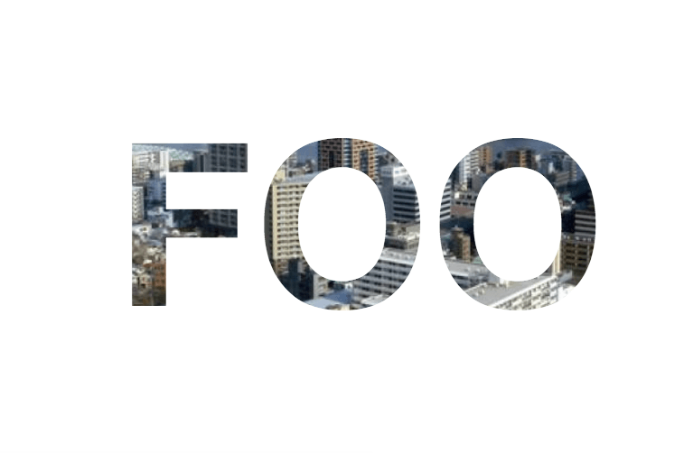
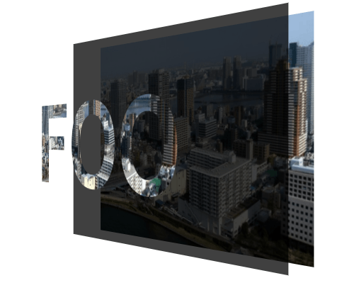
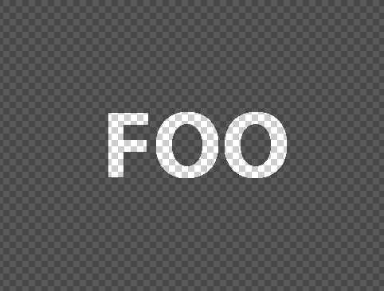

Have you ever considered how to create transparent text in an overlay upon a background? Well, I recently came up with some interesting solutions that I'd like to share with you.
The screenshot bellow will explain what we are trying to achieve.
A transparent text phrase in a semi-transparent overlay upon a background image. So the main problem is "How to create transparent text inside an overlay?".
I suppose that most of us know how to create an overlay upon a background image, for those who don't just have a look at my previous post here. Let's start analyzing various possible solutions.
When I was confronted with this situation the first thing I thought to use was 'background-clip'. We need to crop the fill from the text phrase and the overlay layer accordingly so the background image will be visible behind the text.
.foo {
width: 400px;
height: 300px;
line-height: 300px;
text-align: center;
font-size: 120px;
font-weight: bold;
background-image: url('image.png');
background-size: cover;
background-clip: text;
text-fill-color: transparent;
}
This will produce the following effect.
What we did was to create a block element (.foo) with some basic styles for dimensions and text alignment, then we applied a background image alongside with 'background-clip: text'. The 'text-fill-color: transparent' will ensure us that the text color will remain transparent. Although this isn't what we wanted to achieve, is the exactly opposite. Instead of cropping the fill color of the text phrase we cropped the remaining space outside of text and filled the text with the background image. Ok let's continue with a hack to fix that.
.foo {
width: 400px;
height: 300px;
line-height: 300px;
text-align: center;
font-size: 120px;
font-weight: bold;
background-image: url('image.png');
background-size: cover;
background-clip: text;
text-fill-color: transparent;
position: relative;
}
.foo:before {
content: '';
position: absolute;
top: 0;
right: 0;
bottom: 0;
left: 0;
z-index: -2;
background-size: cover;
background-image: inherit;
}
.foo:after {
content: '';
position: absolute;
top: 0;
right: 0;
bottom: 0;
left: 0;
z-index: -1;
background: rgba(0, 0, 0, .75);
}
This will produce the needed effect.
Pretty much what we needed right? To achieve that we created a pseudo element with a duplicated background image and another for the overlay. We placed them behind the main element by ordering the z-index values from -2 (for the background image) to -1 (for the semi-transparent overlay background) and 0 for the main element.
For a visual presentation see the following example:
Let's say that we need to create the same effect as before but with a video instead of a background image. The previous solution is good enough as long as we deal with static backgrounds (or gifs). To confront these limitation we could use the power that blend modes gave us.
In our situation the magic property is 'mix-blend-mode: color-burn'. Let's create our base markup & styles:
HTML
<div class="foo">
<span>FOO</span>
</div>
CSS
.foo {
position: relative;
width: 400px;
height: 300px;
background-image: url('image.png');
background-size: cover;
}
.foo span {
position: absolute;
top: 0;
right: 0;
bottom: 0;
left: 0;
color: #fff;
line-height: 300px;
text-align: center;
font-size: 120px;
font-weight: bold;
mix-blend-mode: color-burn;
background: rgba(0, 0, 0, .75);
}
By applying 'mix-blend-mode: color-burn' to 'span' element we darken the background to reflect the content’s natural color.
Supposing we're quite good designers (no hard skills are required) and we can easily create this effect at illustrator, the only thing we have to do is to save our work as svg so we could use it later as the background image.
Lastly we'll need to modify the 'fill' property of our svg to apply transparency to overlay. Our svg will look somehow like the following:
SVG
<svg version="1.0" xmlns="http://www.w3.org/2000/svg"
width="482pt"
height="366pt"
viewBox="0 0 482 366"
preserveAspectRatio="xMidYMid meet">
<g transform="translate(0,366) scale(0.1,-0.1)"
fill="rgba(0, 0, 0, .9)"
stroke="none">
<path d="M0 1830 l0 -1830 2410 0
2410 0 0 1830 0 1830 -2410 0 -2410 0 0
-1830z m2531 388 c75 -34 134 -95 172 -176 31
-65 32 -71 32 -202 0 -117 -3 -143 -23 -192 ... />
</g>
</svg>
HTML
<div class="foo"></div>
CSS
.foo {
position: relative;
width: 400px;
height: 300px;
background-image: url('image.png');
background-size: cover;
}
.foo:before {
position: absolute;
top: 0;
right: 0;
bottom: 0;
left: 0;
background-image: url('overlay.svg');
}
The outcome will be the same as before with an important benefit, the compatibility with either background images and videos and the much better browser support in contrary with our previous solutions.
That's it folks!
Tweet